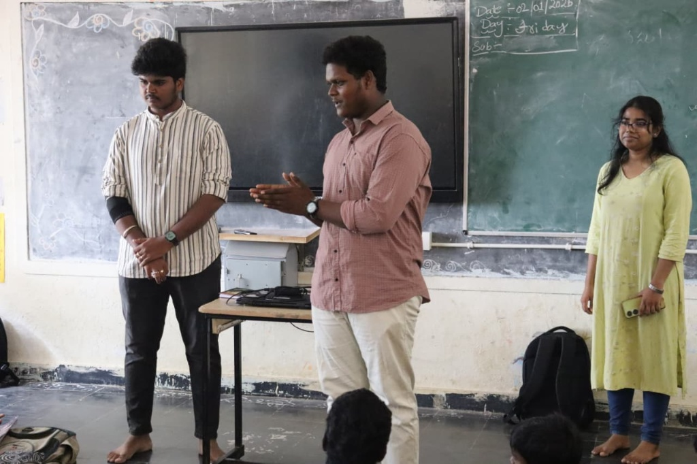
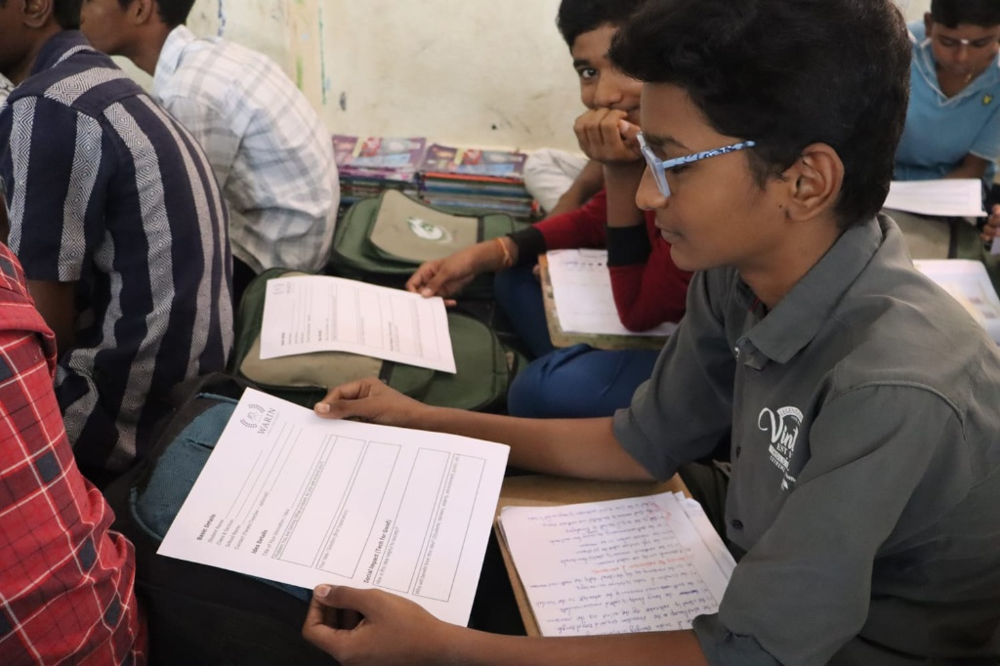
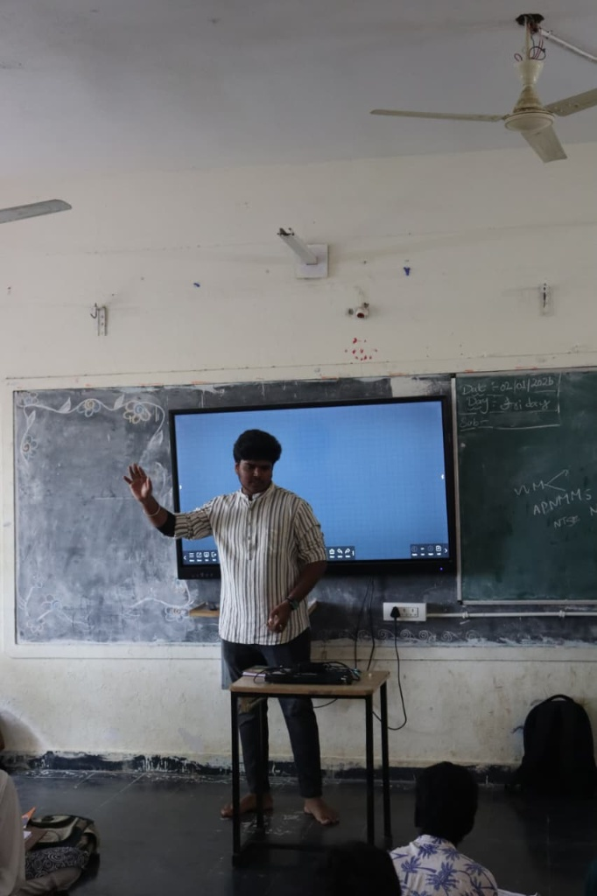

Visual Journey
Moments of Impact
A curated exploration of our workshops and rural outreach programs.

Featured Workshop
Agentic AI Masterclass
Training the next generation of rural engineers.

Outreach
Rural Digital Drive

Competition
Innovation Hack

Seminar